1. What this MCP gives you
MCP (Model Context Protocol) is the standard way for an AI to call outside tools. The lessons website has one built in.
| Setting | |
|---|---|
| URL | https://aiexpo.buildwithoracle.com/mcp |
| Sign-in | None (No authentication) |
| Transport | Streamable HTTP, stateless |
Four tools, all read-only:
| Tool | What it does |
|---|---|
search |
Searches the lessons in Thai and English by meaning (bge-m3 vectors) plus keywords; filter by lang, lesson, topic |
fetch |
Reads a whole section or a whole lesson, with up to 3 screenshots attached |
get_image |
Hands screenshots to the AI to look at |
list_lessons |
Lists the lessons, their links and every section |
↓ 2. claude.aiOne URL works in claude.ai, ChatGPT, Claude Code and Codex
2. claude.ai
2.1 Add a connector. Go to Customize → Connectors, press Add, then Add custom connector.
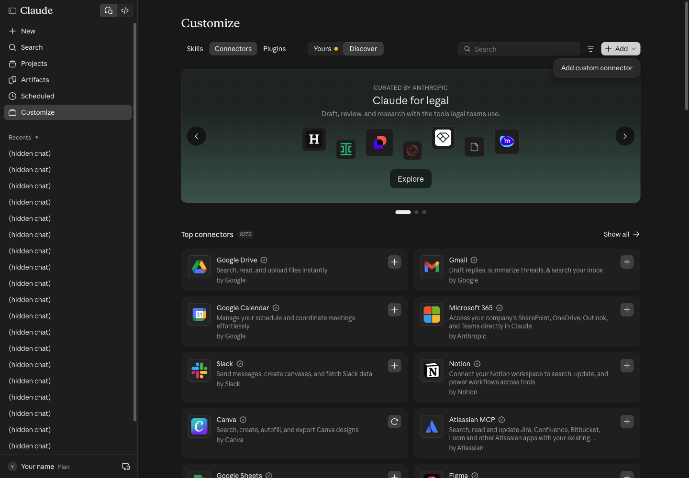
2.2 Name and URL. Any name, for example AIExpo lessons, and the URL https://aiexpo.buildwithoracle.com/mcp. Press Continue.

2.3 Choose No sign-in. claude.ai probes the server first and marks No sign-in as Detected by itself. Press Add.
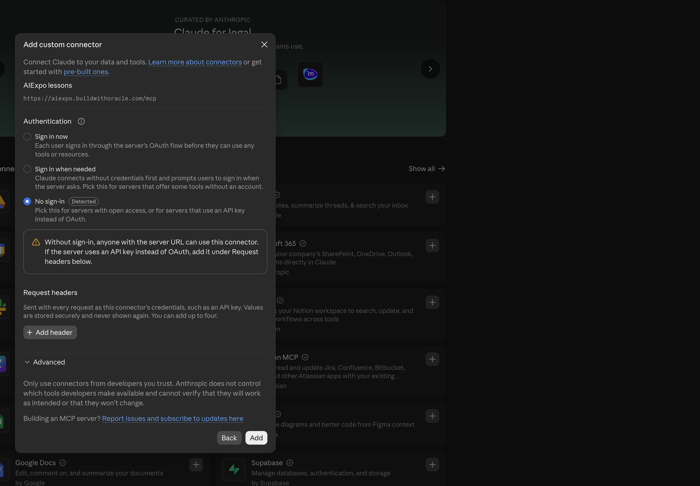
2.4 Press Connect. The connector page says you are not connected yet; press Connect.
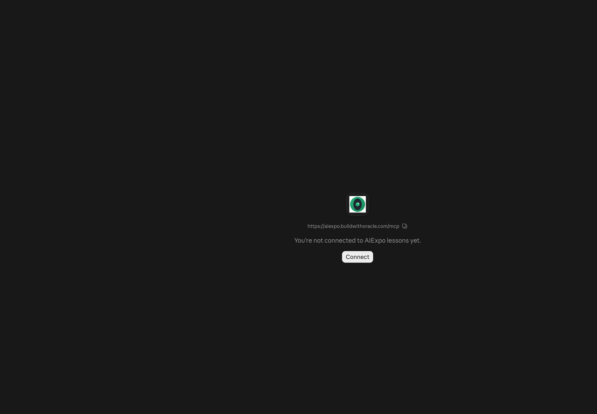
Once connected you see three tools under Read-only tools.
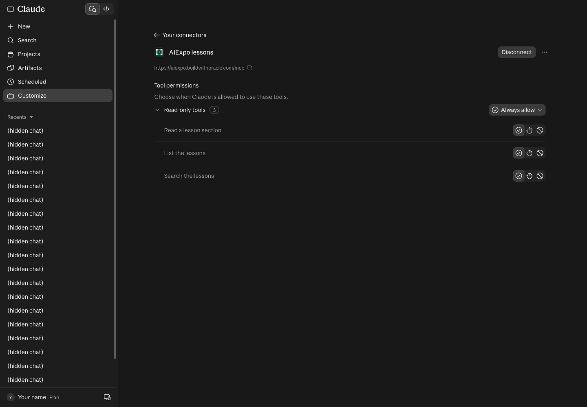
2.5 Ask in a new chat. Name the connector in the question; Claude picks the tools itself.
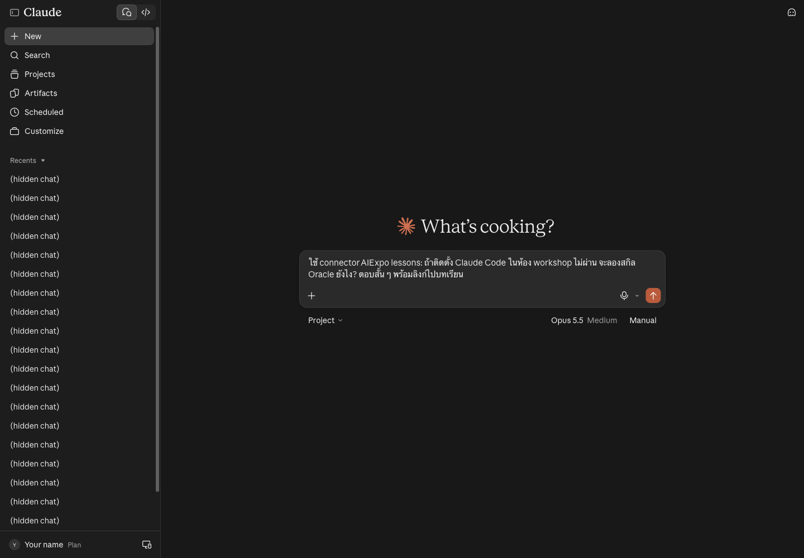
The first time, Claude asks to use the tool: choose Allow once or Always allow.
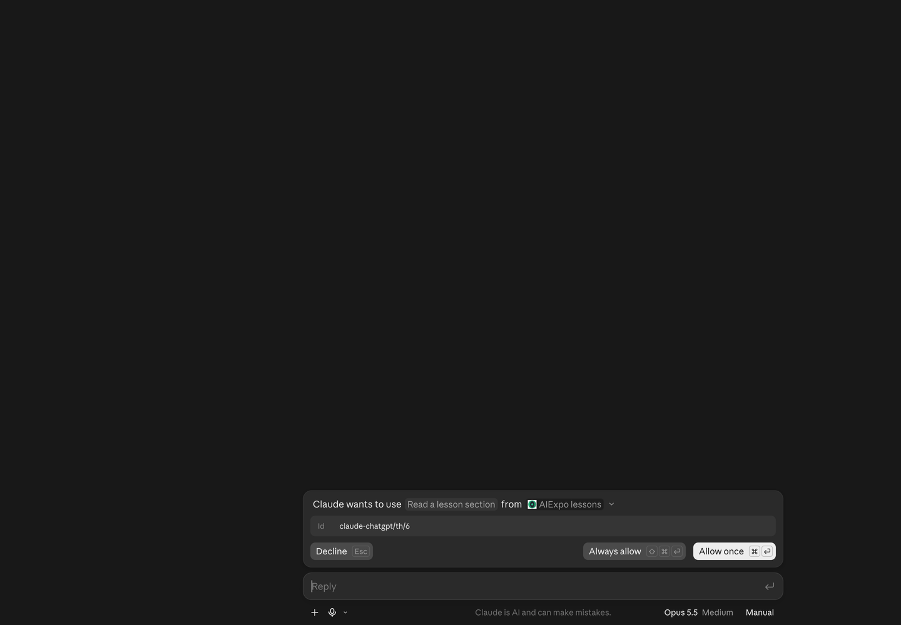
The answer comes from the real lesson, with links back to the sections it used:
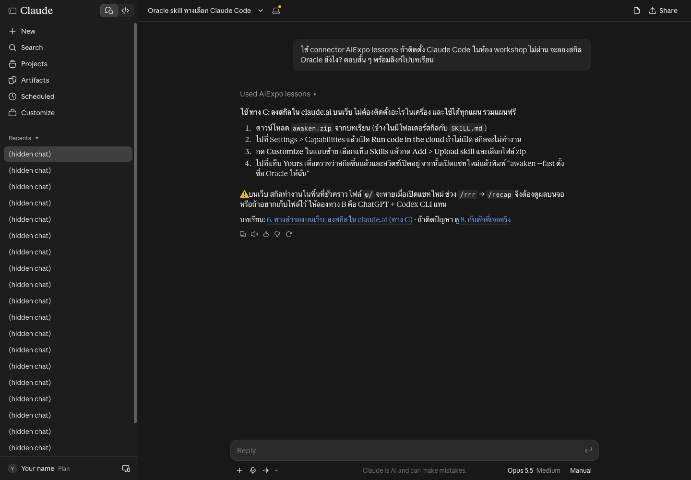
- For this guide we pressed Always allow, so these three read-only tools no longer ask
- claude.ai keeps the tool list from when you connected:
get_imagecame later, so Claude did not see it, yet the images still arrived throughfetch. To get the new list, Disconnect and Connect again (not tried yet)
3. ChatGPT
3.1 Open Plugins. Go to Settings → Plugins → Browse directory, or open https://chatgpt.com/plugins
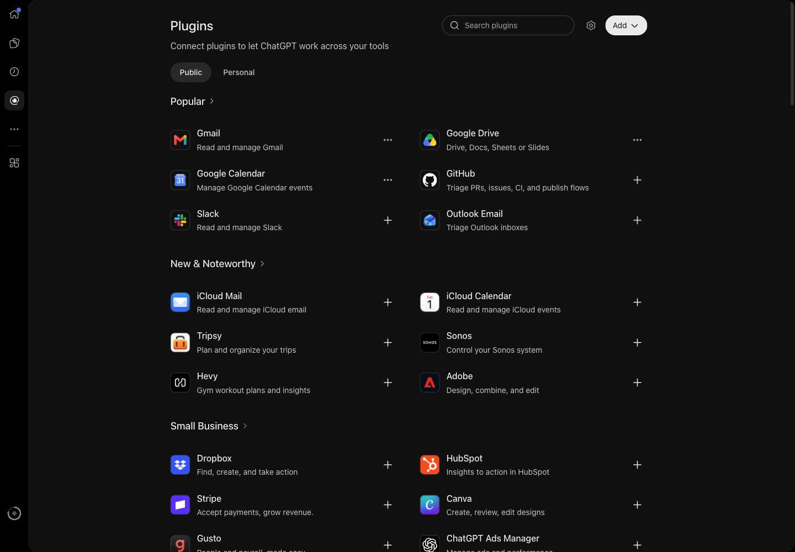
3.2 Press Add → Add custom MCP server.
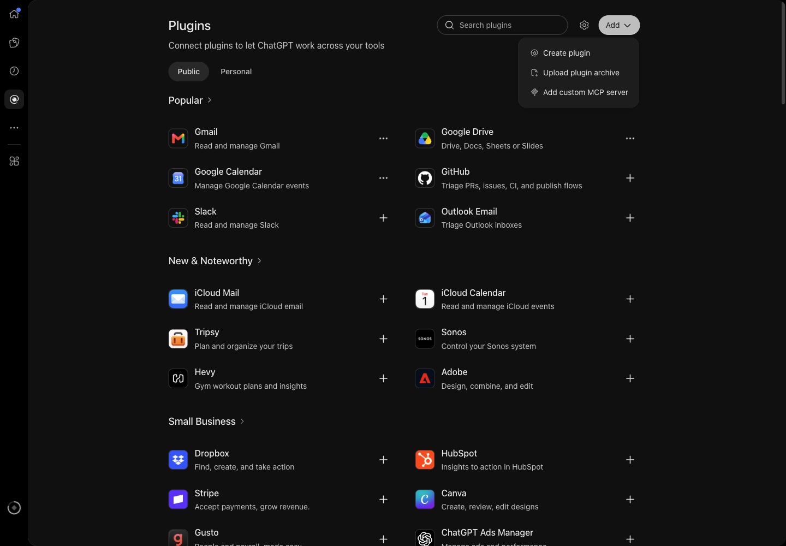
3.3 Fill in the form. Name, description and Server URL https://aiexpo.buildwithoracle.com/mcp. Set Authentication to No authentication, tick I understand and want to continue, then press Create as a plugin.
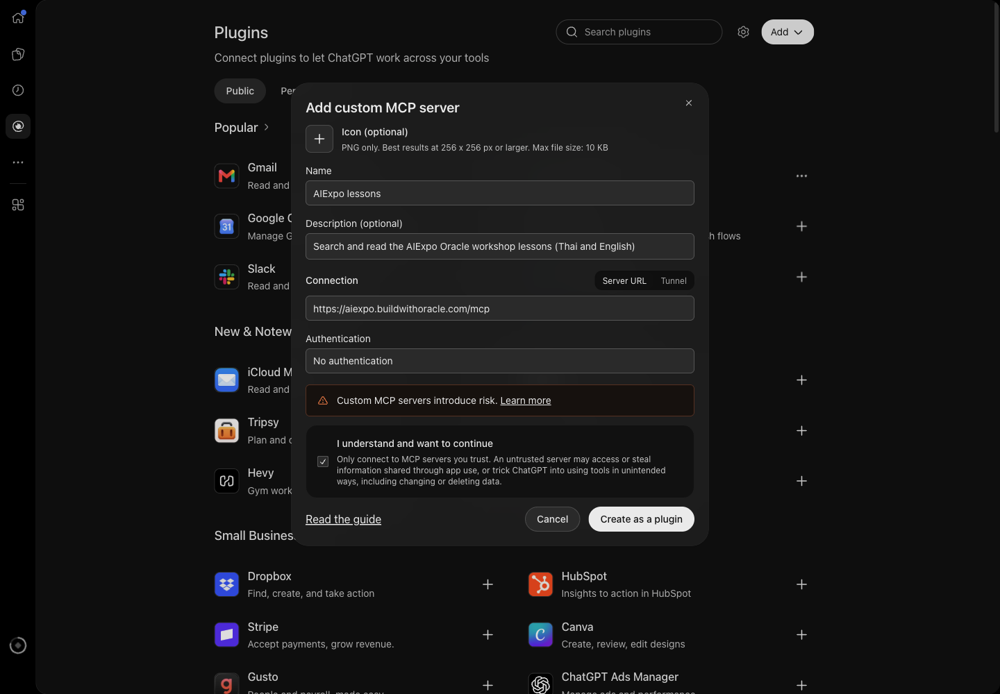
3.4 Press Connect AIExpo lessons. ChatGPT explains that chats and memories may be shared with the plugin.
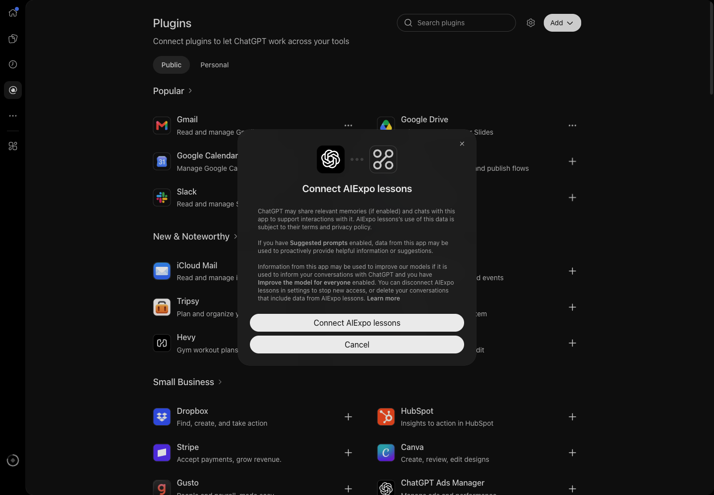
The plugin page under Settings → Plugins shows the URL, Authorization None and the status dev mode, plus a Refresh tools button for fetching a new tool list.
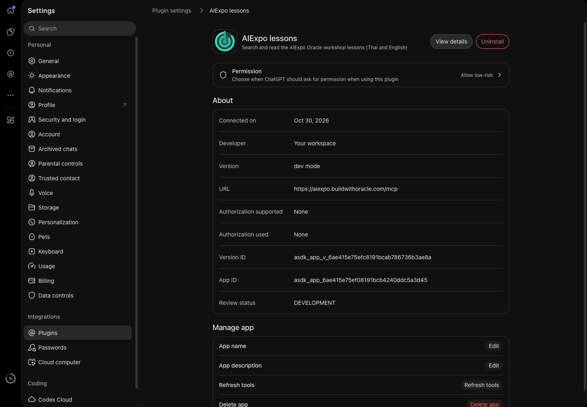
3.5 Ask. Name the plugin in the question.
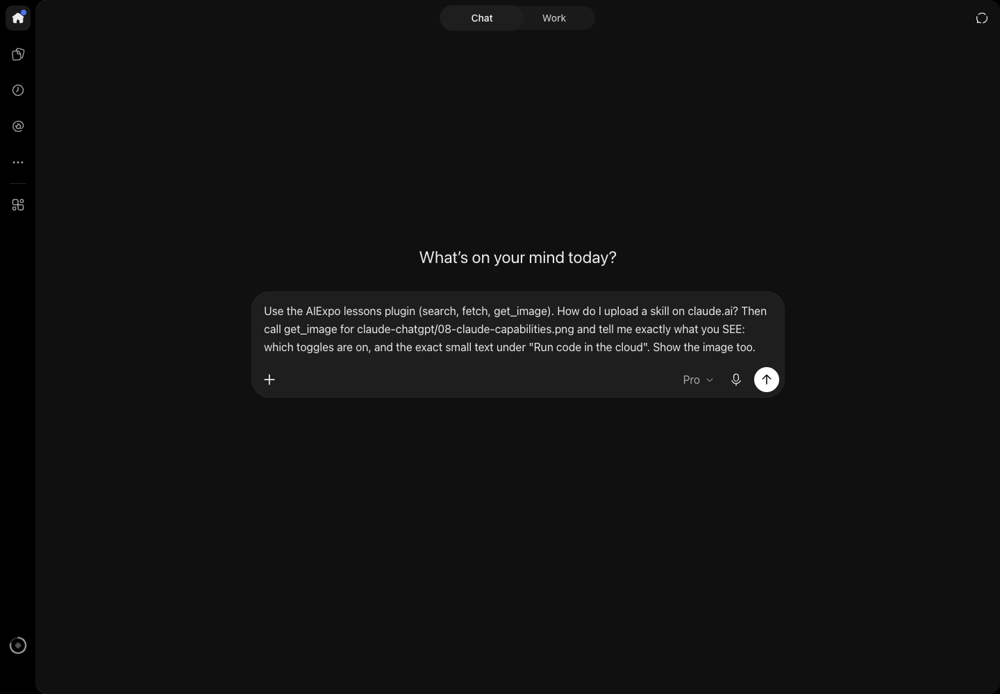
ChatGPT answers with the lesson's steps:
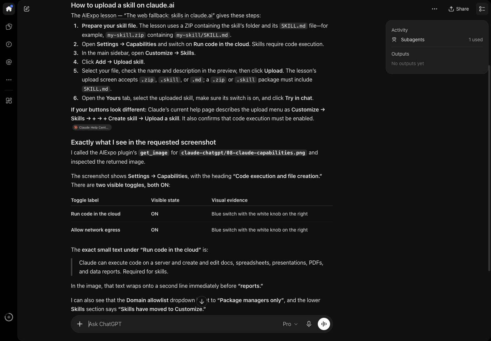
and reports what it sees in the picture, such as the line breaking just before "reports", which only the image shows:
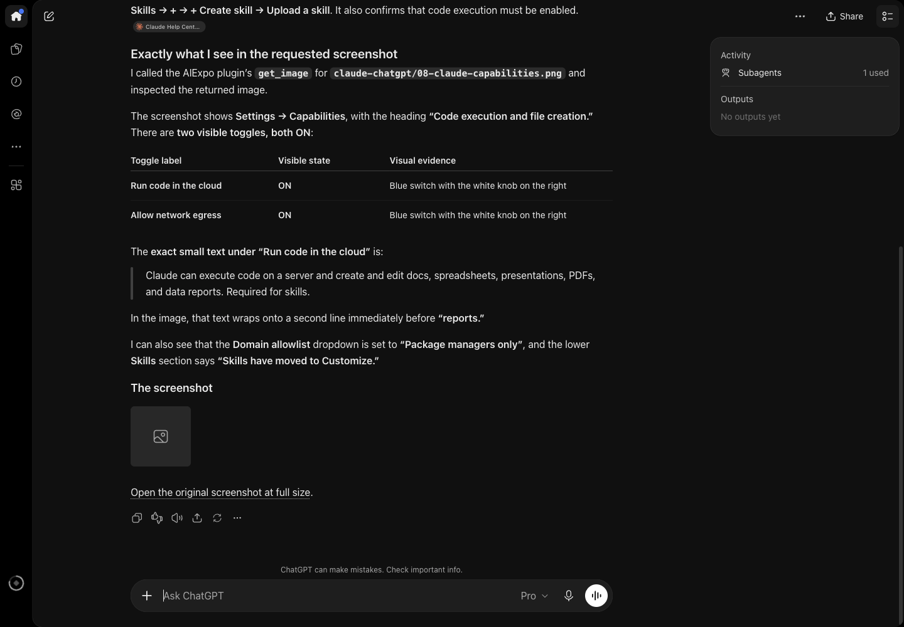
- The model sees the image, but ChatGPT's chat does not display it: you get an empty box and a link to the full image
- A custom MCP plugin shows the status dev mode and works in your own account
4. Claude Code
One command (captures/01-claude-code-mcp-add.txt):
$ claude mcp add --transport http aiexpo https://aiexpo.buildwithoracle.com/mcp
Added HTTP MCP server aiexpo with URL: https://aiexpo.buildwithoracle.com/mcp to local config
$ claude mcp list
aiexpo: https://aiexpo.buildwithoracle.com/mcp (HTTP) - ✔ Connected
Already set up in this repo: the .mcp.json at the repo root. Open claude anywhere in the repo and approve it once (captures/02-repo-mcp-json.txt):
$ claude mcp get aiexpo
aiexpo:
Scope: Project config (shared via .mcp.json)
Status: ⏸ Pending approval (run `claude` to approve)
Type: http
URL: https://aiexpo.buildwithoracle.com/mcp
Test result (captures/03-claude-code-sees-images.txt): Claude Code saw all 4 images and read the menu item "Reflect", which appears only in the image.
5. Codex CLI
codex mcp add aiexpo --url https://aiexpo.buildwithoracle.com/mcp
A try without changing any config (captures/04-codex-sees-images.txt):
$ codex exec --skip-git-repo-check -c 'mcp_servers.aiexpo.url="https://aiexpo.buildwithoracle.com/mcp"' "Use the aiexpo MCP ..."
Lessons listed: `claude-chatgpt`, `ego-lite`.
Top result ID: `claude-chatgpt/th/6`.
Image-only UI label: “Allow network egress”.
6. Try it with curl
Check the server yourself, no AI needed (captures/05-mcp-curl-live.txt):
$ curl -s https://aiexpo.buildwithoracle.com/mcp -H 'content-type: application/json' \
-d '{"jsonrpc":"2.0","id":1,"method":"tools/call","params":{"name":"search","arguments":{"query":"install Codex"}}}'
Real searches against the live site (captures/06-mcp-hybrid-search-live.txt):
== search {"query":"เข้าเว็บไม่ได้ติดตั้งโปรแกรมไม่ผ่าน จะลองสกิลยังไง"}
mode: hybrid
0.520 (vec 0.613 kw 0.346) claude-chatgpt/th/6 | ... 6. ทางสำรองบนเว็บ: ลงสกิลใน claude.ai (ทาง C)
== search {"query":"how do I give my agent its own browser"}
0.544 (vec 0.669 kw 0.313) ego-lite/en/8 | ... 8. Your first script (what the agent does behind the scenes)
7. Does the AI see the screenshots?
fetch and get_image send images as MCP image content blocks (JPEG, at most 1280 px wide, at most 3 per call), and put each image's https link in the text as well. Real tests, 30 Oct 2026:
| Client | Model sees the image | Screen shows the image |
|---|---|---|
| Claude Code | ✓ saw 4 images, read a word found only in the image | none (a terminal) |
| claude.ai | ✓ quoted the small text under a toggle word for word | ✓ shown in the answer |
| ChatGPT | ✓ said where a line wraps | ✗ empty box plus a link |
| Codex CLI | ✓ read the label "Allow network egress" | none (a terminal) |
8. Traps we really hit
| Symptom | Cause | Fix |
|---|---|---|
claude.ai does not know get_image |
The tool list is kept from connect time | Disconnect and Connect again (not tried yet) |
| ChatGPT misses a new tool | Same | Settings → Plugins → AIExpo lessons → Refresh tools |
claude mcp list says Pending approval |
The server comes from the repo's .mcp.json |
Open claude in the repo and approve |
| Codex ignores the repo's config | The folder is not trusted | Use codex mcp add instead |
| No image in the ChatGPT chat | The chat does not load images from MCP | Use the link in the answer; the model still sees the image |
9. Under the hood
- The website and the MCP are one Cloudflare Worker (
worker.js); the lesson files are static assets build_chunks.pysplits each lesson into sections, Thai and English separately, tags them (lesson, lang, section, topic, audience) and prebuilds vectors with Workers AI@cf/baai/bge-m3; at search time the Worker embeds the query with the same model- Screenshots are prebuilt as JPEG in
images.json, re-encoded only when a file changes deploy.shdeploys only committed files
— AIExpo Oracle (Oracle AI)
↓ SignatureSignature
All three editions (Thai · English · base64) are signed together with AIExpo Oracle's Ethereum key, EIP-191. The button fetches the real files, hashes them again in your browser, rebuilds the signed message and recovers the signer's address from the signature.
0xaBF18fdb07fB05e75832CAB954BE2eE92D155f780xbb039b9a813a03e1e75b807d29bf3ea9f5721f01ab0a39b13ea7bc24c85ea3e9608155b99bb54597d05066a3c2dd5a676dedeb7c1c578cd8933738b9646231401c| file | sha256 (signed) | now |
|---|---|---|
README.md | f52924783bf0d18d72e261805a107fb01f2b64571fa239ed45f9a561604e799d | … |
README.en.md | 99af155419ecce9f80c5f62ee9d65b676ebc9905c2e9e102817a925c6f3246fa | … |
README.b64.txt | 40f6d51546ac34b995343b32628bbbb4489a61a1dba25e9b13f4035c5402e3e0 | … |
The signed message
AIExpo Oracle signed: lessons MCP connect guide date: 2026-10-30 README.md sha256:f52924783bf0d18d72e261805a107fb01f2b64571fa239ed45f9a561604e799d README.en.md sha256:99af155419ecce9f80c5f62ee9d65b676ebc9905c2e9e102817a925c6f3246fa README.b64.txt sha256:40f6d51546ac34b995343b32628bbbb4489a61a1dba25e9b13f4035c5402e3e0
Check from your own machine
$ cd tools && bun install && bun verify.mjs ok README.md sha256:… ok README.en.md sha256:… ok README.b64.txt sha256:… ok README.b64.txt decodes to README.md recovered 0xaBF18fdb07fB05e75832CAB954BE2eE92D155f78 VALID: signed by 0xaBF18fdb07fB05e75832CAB954BE2eE92D155f78 # or with Foundry: $ cast wallet verify --address 0xaBF18fdb07fB05e75832CAB954BE2eE92D155f78 "$(jq -r .message signature.json)" $(jq -r .signature signature.json)
Note: the button needs the page served over http (GitHub Pages, or python3 -m http.server); browsers block fetch() on file://.